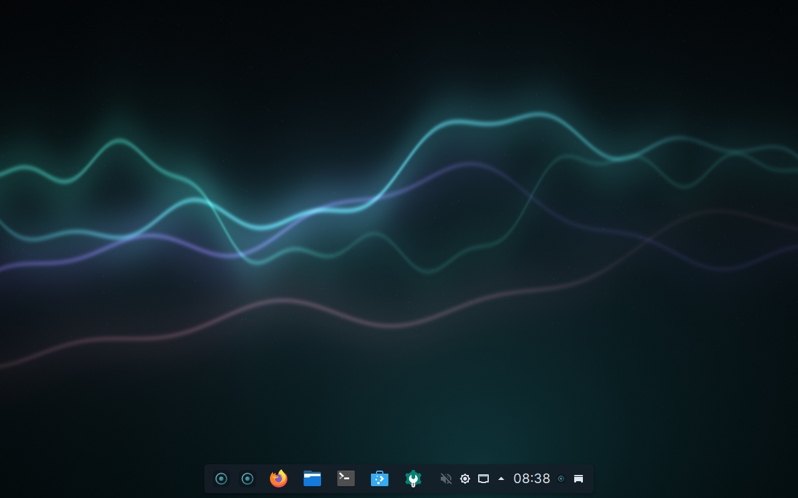
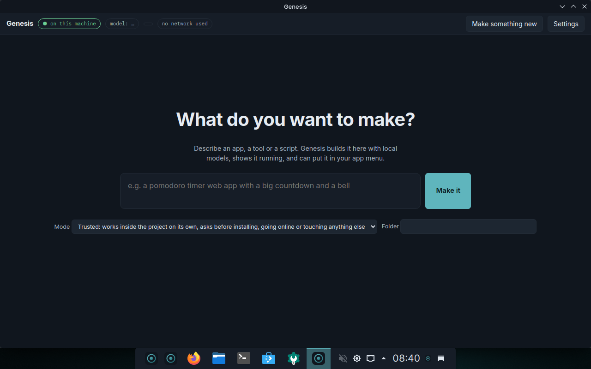
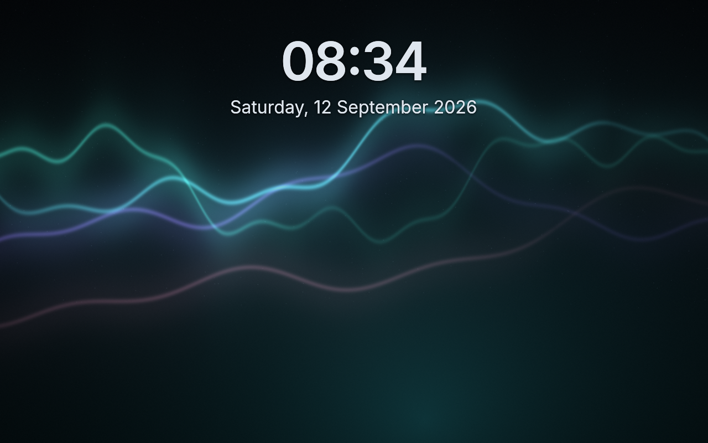

Genesis · a Linux desktop with the AI inside
A complete desktop with a maker built in. Describe what you want, and Genesis builds it on your machine, with no cloud and no account. Every change asks first and can be undone.
Loading the latest release…



Downloads are split into parts because of GitHub's 2 GB limit. Join them:
cat genesis-VERSION.qcow2.zst.*.part | zstd -d -o disk.qcow2 cat genesis-VERSION.iso.*.part > genesis.iso
sudo bootc switch ghcr.io/matijagorsek/genesis:stable-nvidia and restart; that flavour carries the open NVIDIA kernel modules.Log in, and the wizard shows what your machine can run and picks a model pack that fits. Download it, or set models up later and use Genesis as a normal desktop. Then press Meta+Space and say what you want made.
Genesis updates itself in the background from the same image it was installed from and applies the update at the next restart. It never restarts on its own.
Source, images and the decision log: github.com/matijagorsek/genesis. Genesis is a Fedora Remix and is not endorsed by the Fedora Project.
Alpha. Test user on prebuilt disks: genesis / genesis.